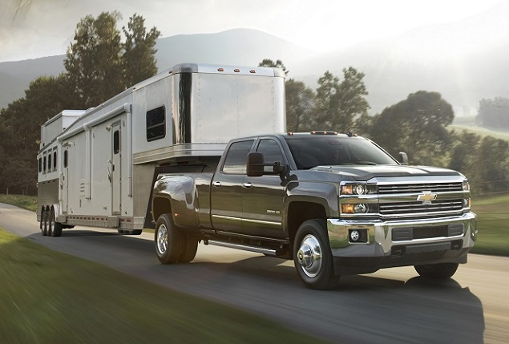

The Chevy Silverado is voted 4.5 stars out of 5 for reliability. The 2018 Silverado had no safety
recalls issued by the NHTSA (National Highway Traffic Safety Administration). The Silverado has a
three-year/36,000-mile basic warranty and a five-year/60,000-mile powertrain warranty. The Chevy Silverado
is expected to work hard and it succeeds.
